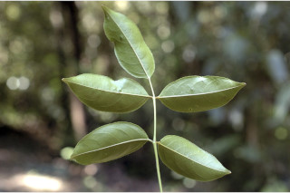
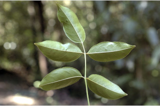
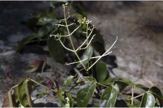
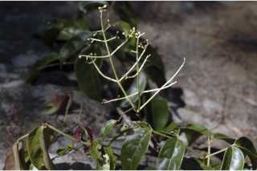

| Leaves : | Leaves compound , imparipinnate , 17-40 cm long, opposite , decussate ; stipule interpetiolar , caducous and leaving scar ; rachis pulvinate , terete , glabrous ; petiolule 0.3 long for the lateral leaflets and 1.3 cm with swollen apex long in terminal one, canaliculate , glabrous ; leaflets opposite , 3 to 9, 7-16 x 3.5- 8.5 cm, elliptic to broadly elliptic , apex acuminate , base acute to rounded , margin serrate , coriaceous , glabrous ; midrib thinly raised above; secondary_nerves 5-7 pairs, gradually curved and ascending towards apex ; tertiary_nerves reticulo-percurrent . |


 


 
